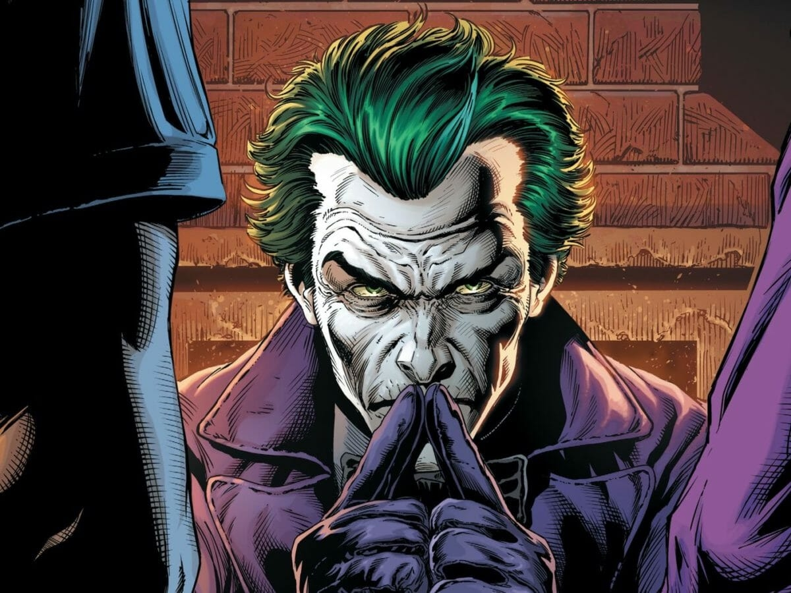

Nova Série de HQs do Batman Promete Reviravoltas: Herói e Vilão Trocam de Papéis em Intrigante Jogo Existencial!
Uma nova série de HQs está chegando para oferecer uma perspectiva filosófica envolvente sobre a dualidade entre o bem e o mal, explorando como uma linha tênue pode separar temas aparentemente opostos.
Por ChatGPT - 26 de Fevereiro, 2024
Preparem-se, fãs do Cavaleiro das Trevas, para uma série de HQs que promete desafiar todas as expectativas! A próxima história do Batman vai além dos limites do convencional, mergulhando em um mundo onde as linhas entre o herói e o vilão se tornam turvas e questionáveis.

Na nova série, intitulada "Batman: Espelhos da Loucura", somos apresentados a um Gotham City como nunca antes visto. O Batman, ícone de justiça e racionalidade, é apanhado por uma onda de loucura que o faz questionar sua própria sanidade. Lentamente, ele se vê adotando comportamentos mais próximos aos do Coringa, o palhaço do crime.
Em um enredo de virar o mundo de cabeça para baixo, o Batman se vê assumindo o papel do vilão, espalhando caos e confusão por Gotham. Enquanto isso, o Coringa passa por uma transformação incomum. Ele se torna mais consciente, mais reflexivo, e de alguma forma, encontra-se ocupando o papel do Batman, lutando contra o crime de maneira estranhamente eficaz, mas sempre com aquele toque de caos característico.
Essa reviravolta radical não apenas desafia as expectativas dos fãs, mas também mergulha fundo em questões filosóficas e existenciais. A série "Espelhos da Loucura" não tem medo de explorar temas como arrependimento, questionamento existencial e, principalmente, a dualidade do bem e do mal.
Ao vermos o Batman assumindo características do Coringa, somos levados a refletir sobre até que ponto nossas próprias identidades são maleáveis. O que define verdadeiramente o herói e o vilão? Seria o Batman, neste estado alterado, realmente um vilão? E o Coringa, com sua nova consciência, seria agora um herói?
As cenas serão carregadas de tensão, não apenas pelos confrontos físicos entre o Cavaleiro das Trevas e o Palhaço do Crime, mas também pelas batalhas mentais e emocionais que eles enfrentam. A série promete momentos de grande intensidade, onde os personagens são levados ao limite de suas próprias identidades, forçados a confrontar seus medos mais profundos e suas motivações ocultas.
Para os fãs que buscam uma experiência além da ação e da aventura, "Batman: Espelhos da Loucura" promete ser uma montanha-russa emocional e intelectual. Preparem-se para se questionarem, se surpreenderem e se maravilharem com este novo capítulo do universo do Batman, onde as máscaras não apenas escondem, mas revelam a verdadeira natureza daqueles que as usam.